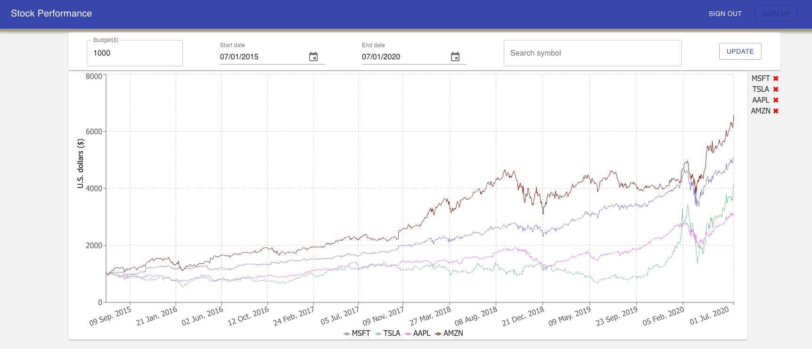

I put my deployed projects on this page
Simple
Drawing Tool
Use cases:
This app that allow users interact on the same drawing canvas in real time.How it works:
A user (host) can let other users draw on his/her canvas by clicking on "Share your canvas" button. This action would generate a random code. Other users (guests) enter the code into their "Room #" textbox and click on "Join canvas by entering a room code" button.When the host finished drawing a segment, a message, containing segment info and generated room code, sent to server. At server, Socket.IO, using publish/subscribe pattern, is responsible for forwarding the message to guests via a channel defined by the room code received from the host. Any guests who subcribe to that channel will receive the message sent by Socket.IO. As a result, the segment is drawn on guests' canvas. Similarly, if a guest made any drawings, these would also be displayed on the host's canvas.
Notice, a segment drawn on canvas is not straight line. It is a combination of all straight lines. To reduce the number of straight lines, paperjs handles smoothing the segment.
Future Improvements:
Room code Validation: when a user entered a room code and click on "Join canvas by entering a room code" button, an alert would show up. Currently, this alert is meaningless. In the future, This alert will tell the user whether a code is valid. The code is valid if and only if there is at least one other user using the code.
Stock
Performance

Use cases:
This tool helps stock investors comparing re always want to figure out what stock is likely gain the most in a list of selected stocks.How it works:
User enters a budget, start date, end date, and a valid stock symbol, then clicks on "Update" to send all of these data to server. At server side, it looks for the symbol in database.- If there is no stock data of that symbol exists in the database, a request sent to a financial service, Alpha Vantage, to get all of available historical stock data (20+ years of data), and cache it in the database.
- If the database already has some data belonging to the symbol, depending on how latest data is, a request to Alpha Vantage may not be needed or only need latest 100 data points from Alpha Vantage.
To make things simple, this app accepts partial shares, and dividends will be reinvested.
Future Improvements:
User input: in the future, all user inputs like budget, stock symbols will be stored so that the user won't type in these info again after logged in.Caching data: right now, if a stock symbol has not asked by any users before, it takes a long time to do all of the work like getting data from Alpha Vantage, storing it in database, and returning it to the user. In the future, the waiting time will be reduced.
Attentions:
Alpha Vantage limits the number of API calls per minute and per day, and also this app is not in a good shape yet. Please close the brownser tab and try again after a few minutes if there is any error.To save your waiting time, you can use some stock symbols that already have data in database like MSFT, AMZN, AAPL, TLSA.